Journées Des Ecoles au Lycée de SABOTSY ANJIRO
La journée des écoles est une journée fixée par le ministère de l’éducation nationale où les écoles privée et public organisent des activités extrascolaires, pour divertir et responsabiliser leurs élèves.

Le Lycée de Sabotsy Anjiro l’a célébrée toute la journée le vendredi 10 Mars 2023 avec une série d’activités telle que des danses, des chants et des repas d’ensemble. Durant cette occasion, IAYI via la présidente a été invité à présenter un discours d’encouragement aux élèves de développer leur talent. Puisque les élèves du lycée de Sabotsy Anjiro regorgent de talents notamment dans les sports collectifs où ils ont remporté le denier championnat basketball inter école.

I Am Young and Impacting Célèbre le 8 Mars 2023 avec les femmes de Saboty Anjiro
A l’occasion de la célébration de la journée internationale des droits de la femme, IAYI a participé aux activités organisées par la commune de Saboty Anjiro, district de Moramanga pour célébrer, cultiver un esprit de solidarité et d’unité entre les femmes. Ces activités ont commencé le mois de février avec des concours de danse le 19 et 26.

Le 7 mars, il y a eu un nettoyage des alentours du CSBII (centre de santé de base niveau 2) réalisé par les femmes de différents bords allant du domaine politique, médical, policier,...
Le 8 mars, il y eu un carnaval dans la matinée qui a fait le tour de la commune en passant dans plusieurs quartiers accompagné des danses et des chants. Ce carnaval a été gracié par la présence du Maire et son Adjoint pour accompagner et encourager les femmes.
Dans la soirée, une soirée gala a été organisée dans la salle de la commune à l’honneur des femmes avec des activités de détente composés de chants, danses, élection de Miss Maman Anjiro, moments de sensibilisation sur les violences faites aux femmes, intervention et encouragement des mamans fait par la présidente d’IAYI à :
- Investir dans les projets de leurs enfants
- Accompagner leurs enfants dans leurs différents projets
- Et surtout le rôle qu’elles ont à jouer non seulement dans le développement de leurs enfants mais également de leur communauté.
Ce qui répond à notre mission d’Interpeler la population sur l’importance de l’écoute de la voix de la jeunesse.
Conférence-festival I AM YOUNG AND IMPACTING 1ère édition Antananarivo Madagascar
La première édition de la conférence-festival I Am Young and Impacting à Antananarivo a eu lieu au TCC Analakely centre-ville le 23/01/2023. Elle a regroupé un public très diversifié comptant plus d’une trentaine de jeunes de différents bords. Cet événement leur a offert une plateforme pour s’exprimer, démontrer et exposer leurs talents.
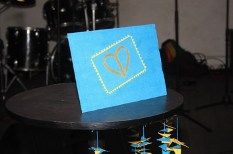
Les expositions.
Toutes les expositions ont été faites par des jeunes start-up qui ont moins de 3 ans d’existence dont chacune d’elle est représentée sous-dessous :
La société Kalienous :
Qui est une start-up crée par RABEARISON KOLOINA et RAZANAKOTO TENDRY TIANA, deux personnes passionnées par la cuisine et la culture Japonaise/Américaine. Cette start-up met sur le marché un nouveau produit « les pancake » vendu sous toutes ses formes avec toutes les garnitures réalisables à Madagascar. Tel : +261349134313
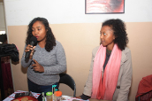
«Mes propre savon »
» entreprise fondée par Dhoiwirou Said étudiant en Chimie : motiver par le taux élevé du chômage dans son pays d’origine les Comores et le désire de mettre en pratique tous ses acquis de l’université, décide de se lancer dans l’entreprenariat en devenant savonnier et tout récemment s’est lancé dans la fabrication des bougies. Tel : +261349320384
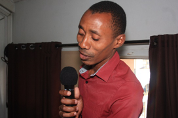
La société Bio’Channi :
: fondée par CHAN SHING Bao Ornella, une jeune femme amoureuse de la nature. Bio’Channi a été fondée afin de valoriser l’engrais biologique dans l’agriculture bio et dans le secteur de bio santé. De ce fait, elle propose à ses clients de l’engrais bio et de l’humus capable de se débarrasser des imperfections de la peau voire guérir des maladies de la peau causées par les mycoses. Tel : +261322711786
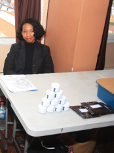
La start-up ‘’Z’Art Aina’’
partager la vie à travers l’Art. Fondée par Zo Nambi produit des articles des rangements, des trousses, des pochettes et des sacs. Elle se différencie par le fait qu’elle concilie l’art et le bien-être. Tel : +261343441011/+261325187959 Adresse Mail : zartainaaminao@gmail.com
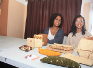
Lormafood :
un restaurant virtuel qui fait des livraisons pour des particuliers, des petites cérémonies et des grandes cérémonies sur commande. Elle est fondée en 2020 durant la crise de la covid19 par Manuella et Loraine. Tel : +261341819184/+261347590695.
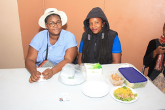
L’entreprise « H’anah cosmétique et bien-être » :
: fondée par Marc et Kezyah est une entreprise qui promet le tout naturel dans les matières utilisées dans des savons artisanaux handmade, des huiles essentielles, des plantes avec des pots en terre cuite. Contact : +261347955672/+261341834737.
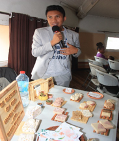
L’entreprise Arhum’Art :
: ffondée par NOFE Manuella est une entreprise spécialisée dans la fabrication artisanale et la vente des rhums arrangées. Ayant un slogan préféré « Après la pluie, vient le beau temps », c’est avec un esprit toujours résilient et optimiste qu’elle arrive à surmonter les défis et les obstacles qui se présentent à elle quotidiennement en appliquant Tel : +261340158592, adresse mail : manuellanofe@yahoo.com
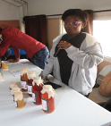
La Jeune, talentueuse et créative Helizo Razafindrakoto est une passionnée de la décoration événementielle. IAYI et ses invités ont eu l’honneur d’admirer son talent à travers la décoration de la salle avec un sens de créativité unique et très séduisante. Tél : +261341215129
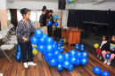
« WinDjaz Sambos » :
est une start-up crée par Djazilaty ASSANE pour partager sa passion avec le public. Elle a développé cette passion depuis sa tendre enfance en voyant sa maman le faire constamment à la maison durant les moments de partage et de communion familiale. Elle a commencé à en faire dès l’âge de 11 ans jusqu’à ce jour et elle dit que c’est sa seule passion. Tél : +261347813592
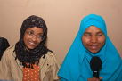
Yolène Claudiane
est une jeune dessinatrice de portrait. Elle a exposé quelques un de ses portraits lors de l’événement. Elle encourage vivement les gens à trouver leurs passions afin d’être épanouis dans la vie.
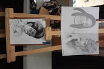
Sej service :
spécialisé dans la confection de gâteaux d’anniversaire. Il a exposé leurs spécialités notamment de gâteau au chocolat, des galettes au coco le jour de l’événement.
Durant le moment de détente, nous avons eu les prestations du : Groupe de dance « Myllean’s » :
spécialisé dans la dance traditionnelle de l’extrême sud de Madagascar. Ce groupe est constitué de 6 personnes qui sont fières d’être Malagasy. Il a pour but de promouvoir leur culture à travers la dance. Contact : +261348230370.
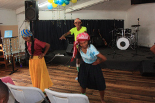
ANJARAMORASATA Liantsoa :
gagnante du prix de chant SCHOOL VOICE en 2014, a dit : « J’ai toujours su que le chant était ma passion et je ne compte absolument pas rester là car je continuerais de chanter toute ma vie » et elle a séduit tout le monde avec sa voix angélique.
Groupe Tia m’danse Mada crée en 2019 est spécialisé dans le Afro et dancehall
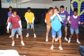
Défilé de mode « AFRO MADA » : cordonnée par RANJANIRINA Claudiana spécialisé dans le vêtement WAX-Africa.
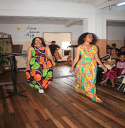
Eric MANJAKABENTANE : leader, chanteur, auteur, compositeur de son groupe
Manjakabentane. Il y met en avant les couleurs du sud de Madagascar.
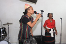
Les interventions
CHAN SHING Joanna : une étudiante en psychologie à l’université catholique et travaillante en freelance depuis plus de 3 ans a partagé avec nous sur le leadership et les 7 personnalités difficiles.
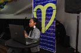
L’intervention de Monsieur RAKOTOARIMALALA Tahina :
un homme de principe et de valeurs avec une expérience de plus de 30 ans dans l’entreprenariat et actuellement opérant dans plusieurs domaines est à la tête de sa propre entreprise a partagé avec nous son succès story et a encouragé les jeunes à se lancer à leur tour dans l’entreprenariat.
L’intervention de RANJANIRINA Claudiana vassilissa :
formatrice de nouveaux mannequins, modèle Makeup a partagé avec nous sa passion dans la transformation des vêtements usés et son travail en collaboration avec d’autres stylistes pour apporter sa contribution à la mode Malagasy.
L’intervention de mademoiselle Rakotoarivelo Tifanie :
une passionnée, engagée à la transformation de l’Afrique. Elle est la fondatrice de l’entreprise « Apostroprh’Partners » spécialisé dans le consulting and marketing où on accompagne les entreprise, marque et acteurs dans leur stratégie d’image de marque institutionnelle. Elle a partagé avec nous de manier concrète en répondant aux questions sur son parcours en tant que jeune entrepreneuse.
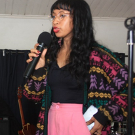
L’intervention de mademoiselle Lindsay NJONGER :
doctorante en médecine créatrice du podcast Mélind- Mélo où elle parle de spiritualité/Développement personnel/Mindset. CEO de La voix Limbique une agence de marketing digital. Elle a partagé avec nous son parcours en tant que débutante dans le Podcasting et comment elle gère sa passion avec ses études de médecine.
L’intervention de mademoiselle Saida Matazaky :
une jeune étudiante et activiste environnementale et climatique a partagé avec nous des projets de développement durable et l’importance de la protection de l’environnement.
Lovasoa RASOLOFOARIVELO :
traductrice-interprète /Assistante Administrative et commerciale/ Amatrice- présentatrice parle quatre différentes langue donc Anglais-Français-Malagasy-Portugais.
Winnie LONTSI Responsable RH œuvrent dans l’encadrement et l’émancipation des jeunes a partagé sur la gestion du temps.